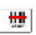
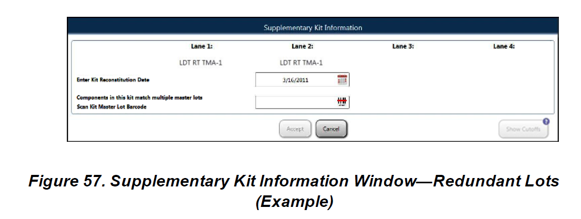
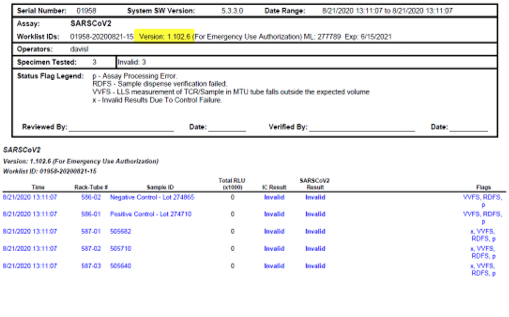
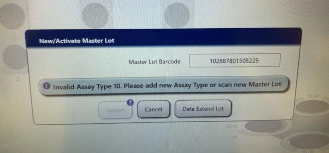
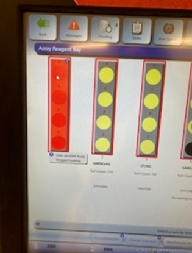
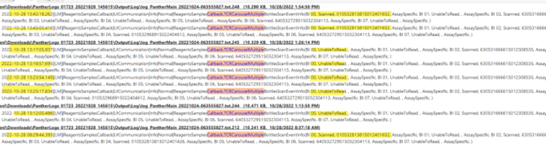

Operator Errors
Operator Errors contains these sections:
- Operator Left Cap on Reagent
- Operator Did Not Place Sample Shield Properly
- Operator Did Not Shut Down and Restart Properly
- Operator Inadvertently Paused Run
- Maintenance Related Operator Errors
- Supplemental Reagent Information Window
- Operator Removed Reagents Too Soon
- Cover and Deflector on Solid Waste Bin Are Missing or Not Properly Seated
- Operator Manually Added Test Orders Unintentionally and the Sample(s) Tested Multiple Times
- Caps Left on Samples and Controls When Using Uncapped Workflow for Aptima Sars TMA
- Uncapped WF for Aptima SarsCov (CTB-00732) Troubleshooting
- Trich Invalid Assay Type 10
- User Aborted Assay Reagent Loading
Operator Left Cap on Reagent
- Error message:
Reagent Pipettor z-axis motor overload detected error
(Cap left on a reagent, most often on Selection reagent)
Sample Pipettor z-axis motor overload detected error
(Cap left on TCR)
- Error Flags: PMFR or PMFT flags on controls or calibrators
- TS Troubleshooting: Shutdown/restart, run without caps on reagents
Operator Did Not Place Sample Shield Properly
- Possible error messages:
- Sample Pipettor X-axis motor overload detected
- Sample Pipettor Z-axis motor overload detected
- Sample pipettor X-axis suffered step loss or stalled (Position is out of tolerance. Coordinate: xx)
- Sample Pipettor error (pump move cancelled due to overpressure detection) – during MW cleaning
- TS Troubleshooting:
- Reset instrument.
- Replace sample shield with a new one (if pipettor touched it is considered contaminated!)
Operator Did Not Shut Down and Restart Properly
- Error messages:
- COP communication errors
Fatal software exception occurred. Transitioning to error state.
- COP communication errors
- TS troubleshooting:
Guide customer to do a proper shut down/ restart:
- Use shut down option on the screen to turn PC off.
- Flip the switch on left side to turn instrument off.
- Bring instrument up first.
- Wait a least a minute to bring computer back up.
Operator Inadvertently Paused Run
- Customer reports:
- Instrument is not processing the samples loaded.
- Instrument is in ‘Ready’ or ‘Assay Processing’ state.
- Messages state pending tests.
- TS Troubleshooting:
Go to Tasks > Load Samples > Sample Rack Bay Screen.
- Check if pause button is grayed out and resume is available.
- Click the resume button to resume sample pipetting.
Maintenance Related Operator Errors
- Operator cannot make it past a certain step during MM.
- TS Troubleshooting: Ask customer to read the task message on the screen, then guide customer to complete it. Often the wrong door/canopy was opened.
- Operator inadvertently started monthly maintenance.
- TS Troubleshooting: Proceed with maintenance without doing the actual cleaning (need to open all doors and drawers when prompted) or shutdown/restart.
- Operator forgot to click ‘done’ after finishing a maintenance task.
- Customer calls they are unable to load reagents. Reagent rack is red. Instrument is still in maintenance mode.
- TS Troubleshooting: Recommend to go to tasks>maintenance and click ‘done’, then proceed. Once instrument is in ready state, customer should be able to load reagents.
Supplemental Reagent Information Window
Customer scanned a new ML barcode and when loading reagents, a supplemental lot info box came up. Customer entered the recon date but the accept button is still grayed out.
TS Troubleshooting
- Explain this is not an error. The

symbol means the MLBS needs to be scanned again. - Reagent lots match multiple ML in the Panther database and instrument is asking to confirm which ML is being loaded.
- Guide customer to use the handheld barcode scanner to scan the new ML when the supplemental info box comes up, then click ‘accept’.

Operator Removed Reagents Too Soon
- Error message: Reagent rack in lane x was removed while in use. All in process samples associated with this kit will be invalidated.
- Error flags: ARR
- TS Troubleshooting:
- Instrument will stay in ‘assay processing’ mode after reagents were removed while in use.
- Reset instrument.
- Remind customer how to identify reagents that are in use.
- According to the Panther Operator’s manual:
Do not remove Reagent or Sample Racks that are currently in use by the system. Do not remove racks when the lane LED is red and the rack graphics on the screen is yellow with a red border.
Cover and Deflector on Solid Waste Bin Are Missing or Not Properly Seated
- Error message: Output Queue actuator suffered stop loss or stalled
- Finding: MTUs backed up from solid waste or MTUs dropping down when opening waste drawer
- TS Troubleshooting:
- Shutdown instrument
- Check waste bin/bag/cover for any backup and proper installation
- Clear off MTUs, empty the waste and ensure the deflector properly seated
- Restart instrument, continue to run and monitor
Operator Manually Added Test Orders Unintentionally and the Sample(s) Tested Multiple Times
- Customer calls to report specimens were tested multiple times or for unintended tests.
- TS Troubleshooting:
- Request logs
- Check activity logs to see additional test order(s) entered manually to the samples
- It is possible test orders were accidently added to a rack (15 samples), instead of to the sample
Caps Left on Samples and Controls When Using Uncapped Workflow for Aptima Sars TMA
- Error flags: VVFS/RDFS on SarsCov2 TMA controls/samples.
- TS troubleshooting:
- Ask if customer is using capped or uncapped WF
- If customer doesn’t know, check logs for assay SW version
- If customer is using uncapped WF, it is possible caps were left on controls/samples

Uncapped WF for Aptima SarsCov (CTB-00732) Troubleshooting
| Scenario | Description / Flags | User Action Required |
|---|---|---|
|
Running the uncapped workflow and Controls are inadvertently loaded with penetrable caps. |
Sample pipettor fails to pierce the penetrable cap. Controls are invalidated with VVFS/RDFS flags. Specimen will not be pipetted and no test orders will be lost. |
Operator unloads and uncaps and reloads controls without caps. |
|
Running the uncapped workflow and a tube with a penetrable cap is inadvertently loaded. |
Sample pipettor fails to pierce the penetrable cap for samples. Samples are invalidated with VVFS/RDFS flags. |
Operator inspects samples, removes penetrable cap, and reloads sample. |
|
Running the uncapped workflow and a tube with a solid cap is inadvertently loaded. |
Sample pipettor hits the top of the solid cap and sample is invalidated with a PMFS flag. Sample pipetting is stopped and no additional samples will be pipetted. Samples already pipetted will continue processing. |
Allow instrument to complete assay processing. Once complete, restart instrument to reset pipettor. It is important to ensure solid caps are removed before loading on to the instrument. |
Trich Invalid Assay Type 10
Customer attempted to scan the Trich Master Lot Barcode, and received error: Invalid Assay Type 10. Please add new Assay Type or scan new Master Lot.

FSE Field Service Engineer. verified Trich Assay correctly installed.
Field Service Engineer. verified Trich Assay correctly installed.
Resolution
Customer had inadvertently ordered a Tigris Trich kit. Customer needs to order a Panther kit.
User Aborted Assay Reagent Loading
Issue
Customer called to report a reagent that was previously loaded successfully had a message under it User Aborted Assay Reagent Loading. Customer stated a newer user was running the instrument and they are not sure what caused this message. Customer also stated the Panther continued to process samples from the reagent kit with this message.
No flags were seen on the samples that were processed using the reagent kit with the message.

Root Cause
- Looks like they moved TCR bottle associated with first lane (lane = 0).
- Notice CT/GC becomes “unable to read” around 1pm.
- There’s some corrective action which was aborted by user.
- Looks like around 1:45pm they fixed the issue.

Resolution
Training.
 button at the top of the page to send feedback, comments, or change requests.
button at the top of the page to send feedback, comments, or change requests.